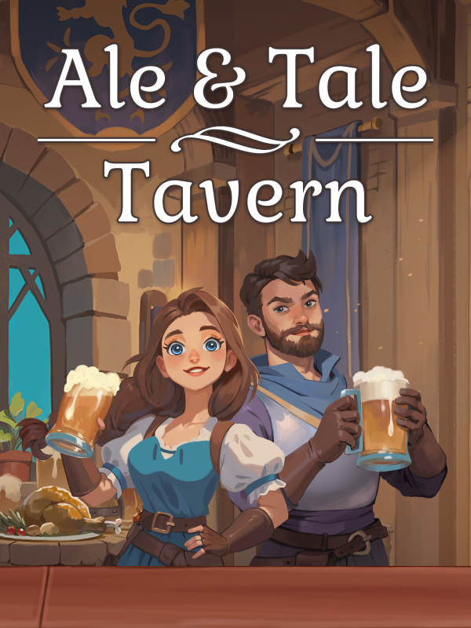

Ale & Tale Tavern
Ale & Tale Tavern
Details
|  | |
| Playtime | 13m 0s |
| Last Activity | 2025-03-14 0:19:53 |
| Added | 2024-12-26 0:04:44 |
| Modified | 2025-10-02 9:34:55 |
| Completion Status | Played |
| Library | Steam |
| Source | Steam |
| Platform | PC (Windows) |
| Release Date | 2024-09-05 |
| Community Score | |
| Critic Score | |
| User Score | |
| Genre | Indie Simulator |
| Developer | Scienart Media |
| Publisher | GrabTheGames UpgradePoint |
| Feature | Co-Operative Multiplayer Single Player |
| Links | Steam Official Website YouTube Twitch Discord Community Wiki Playstation |
| Tag | 3D Action Action-Adventure Adventure Building Casual Cooking Co-op Economy Exploration Family Friendly Fantasy First-Person Indie Management Multiplayer Online Co-Op Party Game Sandbox Simulation |
Description

You are in for a stunning mix of genres: a coop first-person fantasy tavern simulator in an open world, action, fishing, hunting, exploration, fun and diverse quests. And, of course, COOKING! Play solo or with friends and feed the entire world!
The game unfolds in a cozy and beautiful fantasy world. Step into the role of the owner of an abandoned tavern. Work alone or together with your friends to restore the former glory and popularity of the Ale & Tale tavern.
Explore new recipes, participate in hunting and fishing, breed animals, grow plants, complete quests involving unique and amusing characters. Decorate your tavern. Fight against dangers. Cook dishes and drinks that will delight your visitors, and they will repay you with ringing coin!
And remember: owning your own tavern is fun!! And if you want something else - just explore the world, enjoy its beauty and your complete freedom!
Key Features:
Play solo or with other players
Coop mode for up to 6 people

Owl Helpers – Automate Your Tavern!

Enjoy superior graphics and a dynamic game world

Explore a small, handcrafted open world full of adventures and activities

Complete a variety of diverse story quests and meet unique characters inhabiting the game world

Engage in whatever your heart desires
Tavern management, cooking, decorating your tavern and crafting, delivering orders, growing plants, breeding animals, hunting, fishing, and much more

Fight against a variety of enemies and monsters using different types of weapons

Dive into an ocean of fun and complete freedom of action. Play the way you want and enjoy true pleasure! The Ale & Tale tavern awaits its heroes!